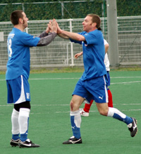
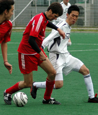
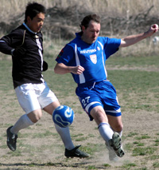
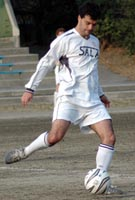
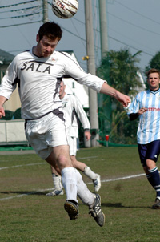
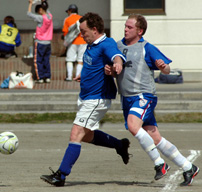

OLD STORIES - March 2007
|  |
|
Nate Gildart celbrates getting the winner! |
JETs Nearing Safety Point
Hachioji Park, Saturday 31st March, Saitama Jets eased their relegation worries with a come-from-behind victory over an ill-tempered France side at Hachiogi Park early on Saturday morning. The French opened the scoring against the run of play midway through the first half and were still in front as the game entered the final 15 minutes, but two clinical finishes from Nate Gildart snatched all three points for the team from Saitama.
more ...
RK.
Call out the Carpenters!
Hachioji Park, Saturday 31st March, Sala’s unbeaten run, stretching like Arakawa Shizuka right back to the first game of the season, finally came to an end in Saitama on Saturday as a Kirk inspired Swiss cleaned up 3-0.
The result leaves the top of the table even less clear than before, although BFC’s random thrashing of YCAC puts them in the driving seat. Sala now slip one point behind Swiss and with a crunch game against the Hibs coming right up, are perhaps, to extend the metaphor, in the middle of the back seat wearing the instant death inducing lap belt. more ...
RC.
|  |
|
Cap'n Kirk, back to winning ways & looking for the golden boot this year! |
Swiss on the Rebound.
Hachioji Park, Saturday 31st March, In a remarkable turnaround to a season that looked completely lost, the Swiss have managed to put together 2 wins in a row, and are looking a little more solid as many of the team’s more consistent performers return from extended trips or injuries.
It was a solid effort from the boys with hard work in midfield making it tough for the Chiba beer boys to connect much and the defensive unit looked unsettled only once or twice with Shigeru’s overlapping runs. The lack of Guido in the first half and Andreas’ recent departure made things a little bit easier, more time on the ball and good runs out of midfield. more ...
KN.
Gentlemen, it was Emotional!
Hachioji Park, Saturday 31st March, Shosuke Yamagishi scored a hat-trick as BFC came back from a goal down to beat YCAC 5-1 and retake top spot in the TML on Saturday. As Vinnie Jones put it at the end of 'Lock, Stock and Two Smoking Barrels': It was emotional. more ...
KC.
Uniting for UNICEF
|
Jorge Kuriyama receives the MVP award from Phil Gibb of sponsor Magellan |
YC&AC, Wednesday 21st March., 19-teams, a notable number of which were not from the Tokyo Metropolis League, took to the YC&AC turf at the crack of dawn on Wednesday March 21st, 2007, to do battle in the 3rd Footy Japan/YC&AC Charity 6’s Football Tournament. For the full story, 4 galleries of photos & more click here ...
FJ.
Winning Ugly
YC&AC, Saturday 24th March, If its true that great sides find a way to win while playing badly then YCAC are the Hungary of the 50s, Spurs circa 1961 and Liverpool of the 70s all rolled into one if still somewhat short of the 1976/77 Camberley Town Youth team. They, YCAC that is, managed to beat WSG 4-1 on Sunday despite playing possibly their worst 40 minutes of this season and probably quite a few gone by too. The Geckoes were not alone in wondering just how they managed to be losing 2-1 as they trooped off for the intermission after playing, at least at times, YCAC off the park in the 1st period. more ...
ST.
Celts Squeeze Deserved Point from Hibs.
Hodogaya, Sunday 25th March, There was a time not so long ago when Celts v Hibs was a big game on the Irish sporting calendar in Japan. Unfortunately not the case these days as the Hibs once again lined up without a single Irishman in the squad against the Celts 7. Times are changing and so is the Celts fortune as they won a deserved point in a physical game in Hodogaya on Sunday. more ...
RH.
Hibs Losing Sight of Title Contenders.
Hodogaya, Sunday 25th March, The Hibs went into this match looking to put our first league win of 2007 on the board. It is no secret that we have hit a lean spell, but we had been buoyed by a strong showing, including a victory over the Celts in the previous week’s Dubliner’s cup. After an unlucky loss against France in reality we had to win this one to still be in a chance of winning the league. …. more ...
BC.
Vags Dominate Amanis in Misato Dust-up
|  |
|
Solid as ever, Ged still leads the Vagabonds defence despite being older than all their strikers combined ages! |
Misato, Sunday 18th March, Fair enough; rain and probably even snow is preferable to the squally wind and bright sun today. Visibility was poor – the howling wind and dust clouds that swirled about the pitch made you want to pack up and go picking peaches in California. Wyatt Earpe shot one of the Clantons under similar conditions. It was impossible to judge distances or flight of the ball with the sun beaming through the dust.
Moaning aside, a player to watch in the coming year is Paul Wadsworth – he gets more important in every game. Even on a day like this his play had the delicacy of truffles. Muzzy would have certainly scored a hatrick today if his left eye didn't become sightless and grotesque after a blast of dust. Still in his brief 10 minutes at the start he scored the key first goal, a short rebound, and showed a return to his electric momentum last seen in full in the BEFC game.. more ...
GQ.
|  |
|
The 'Columbian Enforcer' is returning to his homeland, but not before going out on a goal! |
Adios Amigo!
Hachioji Park, Saturday 17th March, Sala kept up the pressure on the top two with a battling win in wind ravaged Saitama on Saturday, the game marking the end of Andres’ all too brief stay at the club.
What with veteran ankle biter Brian Gallagher off to Aichi this month, Sala are desperately lacking in midfield tenacity and Andres will be sadly missed. The player, who has turned out to be probably Columbia’s second greatest export of all-time, did find time to mark the end of his tenure in the same way he started it though - by scoring a vital goal.…. more ...
RC.
Star Trek IV. Cap'n Kirk Strikes Back
Hodogaya, Saturday 17th March, The first snow of the year had to be at 9 am on Saturday in Hodogaya, 15 minutes before kick-off between Jetro and the Swiss. Both teams were suffering from the time/location penalty imposed by the league, one of the Swiss players had to get up at 4 am while Jetro only started with 10 grim looking souls. more ...
KN.
|  |
|
Jumping Jelleybeans, Ian Jelley is no softie! |
YCAC literally hang on by the skin of their teeth…
YC&AC, Saturday 10th March, The great white bandwagon that is Sala rolled up to YCAC on Saturday knowing that a win was vital to keep up with pacesetters BFC.
With Hibs and Swiss contriving to lose more matches in the last month than they have in the previous three seasons, the chance was there for Sala or YCAC to open up a gap on the Old Firm and remind the league leaders that the fat lady hasn’t finished warming up her vocal chords quite yet. And of course it was a nil-nil draw…. more ...
ST.
Sala & YCAC Stalemate
YC&AC, Saturday 10th March, Yep, a good day for the BFC but neither Sala or YCAC seemed too disappointed with their respective points after a 0-0 draw. Certainly YCAC, with a record of 1 draw and 5 losses against Sala in the TML thus far and only 10 men on hand as KO loomed, would have settled for a draw at 10 past one on saturday. more ...
ST.
MERD!
 |
|
'Old School' Hibs crisis sees the return of many oldboys! |
Oi Futo, Saturday 10th March, In the previous game against YCAC, the Hibs were out-played and out-muscled and were devoid of any ideas up front to break down a very strong YCAC defense. This week, against France FC, was just the opposite. The Hibs, with three seriously aging players called out of retirement, completely dominated the game, with at least five 1-on-1s with the keeper and hitting the woodwork on three occasions. more ...
KT.
JETs Edging Up
Hanno, Saturday 10th March, The Saitama Jets arrived at a reasonably comfortable 2-0 victory over a mediocre Jetro side at Hanno, courtesy of two goals in the space of 5 second half minutes by Nate Gildart and John Rayner. more ...
KT.
Rarified air as BFC squish Geckoes
|  |
|
'Pink' Neil forces a error for BFC's 2nd goal. |
OiFuto, Saturday 10th March, BFC went two points clear at the top of the TML after a fairly comfortable 4-1 win over an improving Geckoes side on Saturday.
YCAC's goalless draw with Sala put a sliver of daylight between the top two but no one at BFC is daring to count chickens. In fact, chicken is off the menu until the end of the season. Officially more ...
NC.
Ode to Oifuto
Oi Futo, Sunday 4th March, A gorgeous day it was, the 4th day of March in Tokyo, it is a pity that it had to be marred by one of the ugliest exhibitions of "not quite sure what" that I have witnessed in a number of years. So instead of writing up what was a truly miserable display, I've chosen to pay homage to the most durable pitch that I have played on over the last 17 years in Tokyo, Oifuto Dai Ichi. more ...
KN.
Geckoes Continue to Crawl Out of Danger Zone
YCAC, Sunday 4th March, The Geckoes continued their good run with a fine 2-0 victory over the French in a tight and friendly affair (only because the abuse was in French and so we couldn?t understand it). Goals from Tom Kiley and Mikkel Troen in each half ensured that the Geckoes got the 3 points and march up to the dizzying heights of 6th place in the table. more ...
RK.
Lions get Upperhand in Grudge Match
YCAC, Sunday 4th March, As the match preview promised, the game was cracker from start, when Ken could’ve, and should’ve put Lions ahead within seconds after pacing through the defence, only to see his shot go wide at the far post. more ...
HS.
JETS Stun Swiss
Oi Futo, Sunday 4th March, Saitama Jets picked up their first TML points since October against a lackluster Swiss side at sunny Oi Futo. Yoshi Osawa opened the scoring in the first half with a cool finish from inside the box and the Jets doubled their advantage early in the second half with a Nate Gildart penalty. However the Swiss pulled one back immediately with a penalty of their own, awarded for handball, but despite late pressure there was to be no equalizer and the Jets held out for a valuable 3 points. more ...
RK.
BFC Go Logo in Tough Vags Win
Oi Futo, Saturday 3rd March, Two goals from captain Jon Day and a long-range blast from new boy Garry Robertson gave freshly logo-ed BFC a hard-earned 3-1 win over BFC Vagabonds in the Footy Japan Cup quarter-finals.
BFC survived a couple of scares, not least the sight of Maz in TIGHTS, but overall a fair result which was followed by an all-too-rare inter-club izakaya session. more ...
CD.
Prelude to a Thrill
YCAC ground on Sunday 4th March, 1pm, will witness one of the games of the season. Both teams have players that travelled in opposite directions. Lions captain Gaafar Somi and striker Hussein Shehata were Barbs regulars last season, and Lions players like M. Birkiya played a few matches for Barbs last year, as Barbs’ Fred Delsaux featured in many friendlies for Lions. more ...
HS.